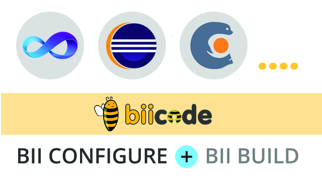

biicode knows how source code files connect to each other. With this information, it creates a boilerplate CMake layout to build your project automatically. biicode then detects how sources connect and builds a dependency graph following #includes and implementations generating, for each block, a CMakeLists.txt defining variables to the dependency graph detected.
This translates into a CMakeLists.txt file with just one line by default:
1 | ADD_BII_TARGETS() |
Even though the boilerplate might be enough for some projects, here’s a guide to fully control the building process.
Today, we explain the different options available in biicode once you’ve got your CMakeLists.txt ready.
